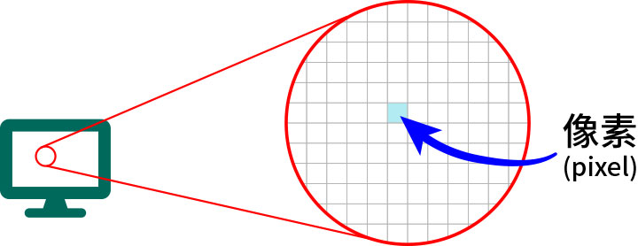

你有遇過以下問題嗎？
演出節目單／海報要印照片，設計者會向演出人員要照片，那麼照片檔該怎麼給才是正確的？
（有些外包的設計師說要給解析度 300 dpi 的檔案，其實不完全正確）
那麼到底給什麼樣規格的照片才是正確的啊？
還有，解析度 300 dpi 是什麼意思？
我怎麼知道手機拍的照片解析度到底是多少呢？
你了解數位影像嗎？
自從智慧型手機出現後，拍照功能是一年比一年炫，一家比一家強。現在（2018 年）的智慧型手機早就不比以往，十年前要製作海報／節目單等印刷品時，照片大多還是要用數位相機拍攝，但如今用中階以上的手機照片也足堪使用。
但是對於隨手可得的數位影像，你對它的了解有多少？
學校有教嗎？
年紀輕一點的人也許以前在中小學有上過電腦課，不過大多數的電腦課都是基本電腦操作、文書處理、試算表計算，偶爾寫寫簡單的程式。至於影像處理，早期的電腦老師大多自修出身，那時的所謂電腦技能並無影像處理，所以學生們也只是一知半解，甚至弄錯基本概念；更不用說年紀大一點，出社會後才因為工作關係接觸電腦的使用者了。
我的公司早期是軟體公司，後來也開發小學到高中的各式電腦教科書，以及各種線上課程，所以我對「數位產品」以及「印刷品」（兩者的使用方式不同）所使用的數位影像還算頗有接觸。
在公司的二十多年間應徵了不少新人進公司，基於工作所需，他們必須對電腦影像處理有一些基本概念。但讓我訝異的是不只一般教材編輯人員相關知識嚴重不足，連專業美工人員對有些概念也只能算是一知半解！我這才知道原來學校並沒有教授數位影像的相關基本知識，這產學落差可不算小。
生活中早已離不開數位影像
現在大家生活中早已離不開數位影像：上網找資料要下載圖片，給客戶的簡報需要圖片，在社群網站／APP 中和朋友聊天要貼美食或旅遊照片，連製作海報／節目單等印刷品也需要圖片。但由於許多人對於數位影像相關知識不是很足夠，有時在一些場合中會以錯誤的方式使用數位影像，於是就常常發生一些狀況如：簡報圖片中的字是模糊不清的，要印刷用的圖片給太小等等。
那麼解決的方式是什麼？當然是得有數位影像基本的相關知識，你才能聽懂別人在說什麼，以及正確的使用數位影像。為了幫大家補足這方面的相關知識，我們就從最基本的地方開始介紹起吧！
影像尺寸的基本單位：像素（pixel）
現在能顯示數位影像的載體相當多樣：從基本的電腦螢幕、電視機、投影機，到較新的手機、平板、智慧型手錶、電子書閱讀器等，這些螢幕都能用來顯示「數位影像」。如果靠近一台電腦螢幕看，你會發現螢幕是由一個一個的小點組成，這些小點有個專有名詞：像素（pixel）。
test
